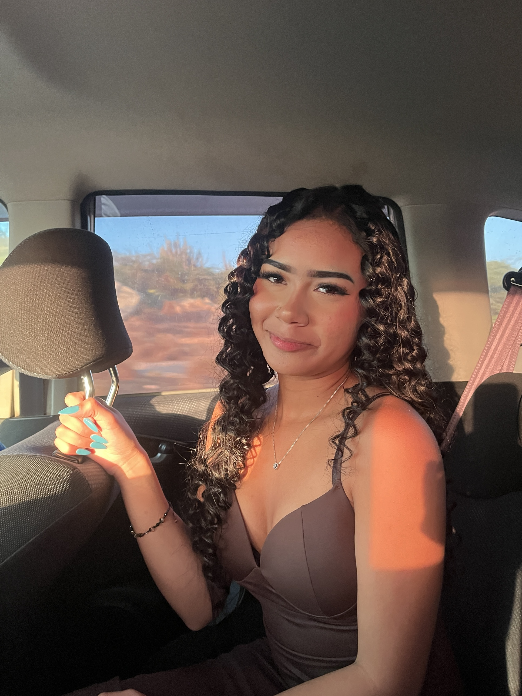
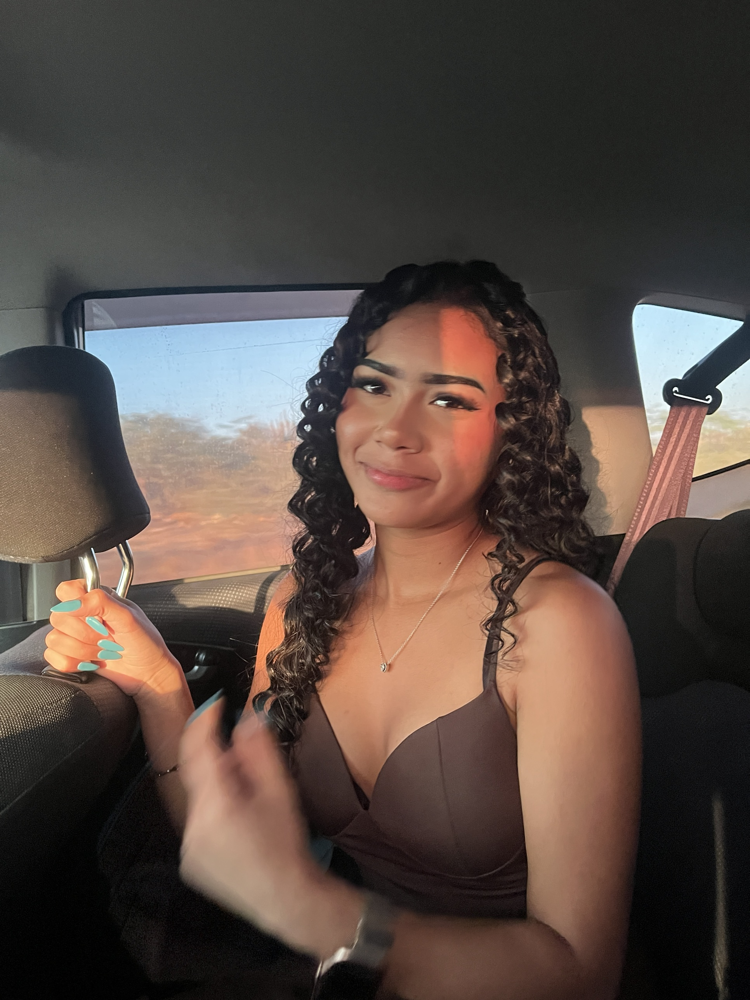
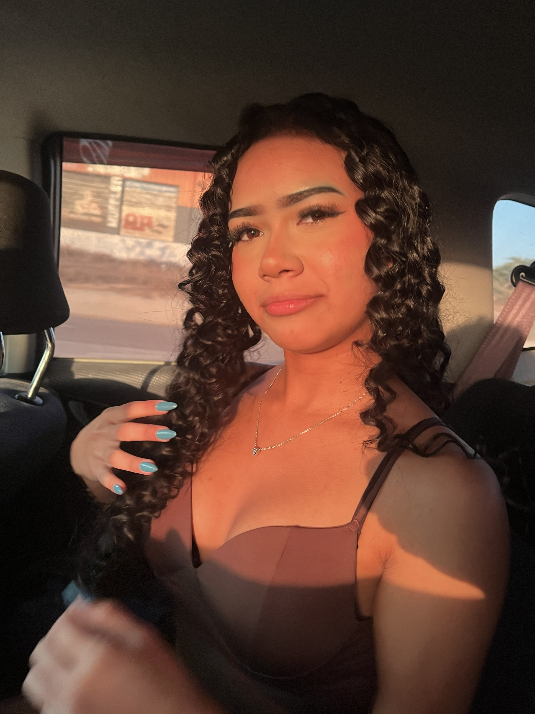

Katherine, esto es para ti. Para tus rulitos de oro que se enroscan solitos y que amo enredar entre mis dedos. Para mi niña chiquitica, la que cabe en un abrazo pero llena toda una casa. Para mi enojona hermosa, la que hace pucheros y termina siendo la sonrisa más bonita que he visto.
Cada foto tuya me recuerda por qué te elijo todos los días. No hay luz de atardecer que no se vea más bonita contigo dentro.
Te amo mucho, mi Kathe. 💛
mis fotos favoritas de ti



un momentico tuyo
🤎
la amo mucho, Katherine.